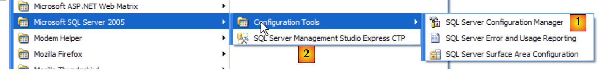
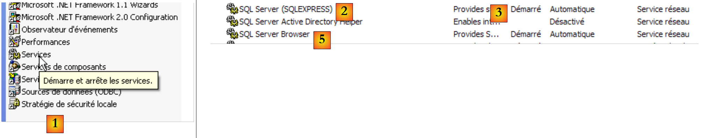
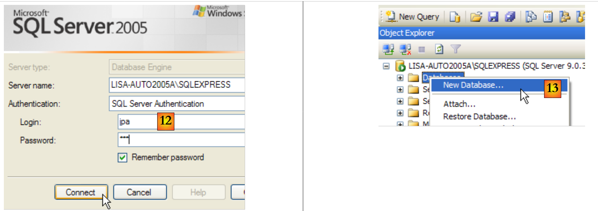
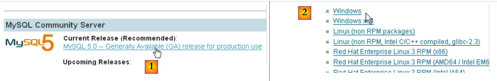
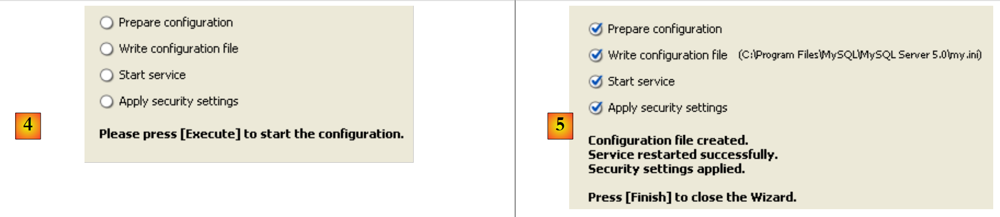
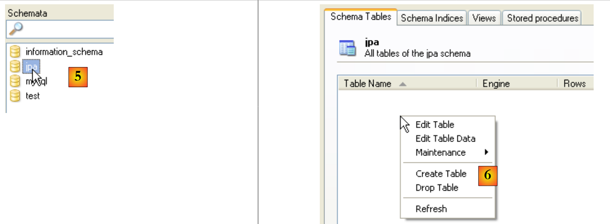
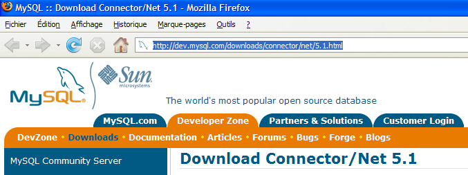

14. 附录
14.1. SGBD SQL Server Express 2005
14.1.1. 安装
SGBD SQL Server Express 2005 可在以下网址获取：[http://msdn.microsoft.com/vstudio/express/sql/download/]：
 |
- 在 [1] 中：首先下载并安装 .NET 2.0 平台
- 在 [2]：然后安装并下载 SQL Server Express 2005
- 在 [3] 中：接着安装并下载 SQL Server Management Studio Express，该工具可用于管理 SQL Server
安装 SQL Server Express 将在 [Démarrer / Programmes ] 中生成一个文件夹：
 |
- 在 [1] 中：SQL Server 的配置应用程序。还可用于启动/停止服务器
- 在 [2] 中：服务器管理应用程序
14.1.2. 启动/停止 SQL 服务器
与之前的 SGBD 一样，SQL Server Express 已作为 Windows 自动启动服务安装。我们将更改此配置：
[Démarrer / Panneau de configuration / Performances et maintenance / Outils d'administration / Services ]：
 |
- 更改为 [1]：双击 [Services]
- 为 [2]：可见存在一个名为 [SQL Server] 的服务，其已启动状态为 [3]，且启动类型为自动 [4]。
- 在 [5] 中：另一个与 SQL Server 相关的服务，名为“SQL Server Browser”，同样处于活动状态且为自动启动。
要修改此设置，请双击 [SQL Server] 服务：
 |
- 更改为 [1]：将服务设置为手动启动
- 在 [2]：将其停止
- 在 [3]：确认服务的新配置
对服务 [SQL Server Browser] 也按此方式操作（参见上文 [5]）。 要手动启动和停止 SQL Server 2005 服务，可使用 [SQL server] 文件夹中的 [1] 应用程序：
 |
 |
- 在 [1] 中：确保 TCP/IP 协议处于启用状态，然后进入协议属性。
- 在 [2] 中：在 [IP Addresses] 选项卡中，[IPAll] 选项：
- [TCP Dynamic ports]字段留空
- 在 [TCP Port] 中，将服务器监听端口设置为 1433
 |
- 在 [3] 中：右键单击服务 [SQL Server] 可访问服务器的启动/停止选项。此处，我们启动它。
- 在 [4] 中：SQL 服务器已启动
14.1.3. 创建 jpa 用户和 jpa 数据库
按照上述说明运行 SGBD，然后通过以下菜单运行管理应用程序 [1]：
 |
 |
- 在 [1] 中：以 Windows 管理员身份连接到 SQL 服务器
- 在 [2] 中：配置连接属性
 |
- 在 [3] 中：允许混合连接模式：既可使用 Windows 登录（Windows 用户），也可使用 SQL 服务器登录（在 SQL 服务器中定义的账户，独立于任何 Windows 账户）。
- 在 [3b] 中：创建一个 SQL 服务器用户
 |
- 在 [4] 中：选项 [General]
- 在 [5] 中：登录名
- 在 [6] 中：密码（此处为 jpa）
- 在 [7] 中：选项 [Server Roles]
- 在 [8] 中：用户 jpa 将拥有创建数据库的权限
确认此配置：
 |
- 在 [9] 中：已创建用户 jpa
- 在 [10] 中：注销
- 在 [11]：重新登录
 |
- 在 [12] 中：以用户 jpa/jpa 身份登录
- 在 [13] 中：登录后，用户 jpa 创建了一个数据库
 |
- 在 [14] 中：该数据库将命名为 jpa
- 在 [15] 中：该数据库将归 jpa 用户所有
- 在 [16] 中：数据库 jpa 已创建
14.1.4. 在 jpa 数据库中创建表 [ARTICLES]
我们根据以下脚本 SQL 创建表 [ARTICLES]：
/* 创建表 */
CREATE TABLE ARTICLES (
ID INTEGER NOT NULL,
NOM VARCHAR(20) NOT NULL,
PRIX DOUBLE PRECISION NOT NULL,
STOCKACTUEL INTEGER NOT NULL,
STOCKMINIMUM INTEGER NOT NULL
);
INSERT INTO ARTICLES (ID, NOM, PRIX, STOCKACTUEL, STOCKMINIMUM) VALUES (1, 'article1', 100, 10, 1);
INSERT INTO ARTICLES (ID, NOM, PRIX, STOCKACTUEL, STOCKMINIMUM) VALUES (2, 'article2', 200, 20, 2);
INSERT INTO ARTICLES (ID, NOM, PRIX, STOCKACTUEL, STOCKMINIMUM) VALUES (3, 'article3', 300, 30, 3);
/* 完整性约束 */
ALTER TABLE ARTICLES ADD CONSTRAINT CHK_ID check (ID>0);
ALTER TABLE ARTICLES ADD CONSTRAINT CHK_PRIX check (PRIX>0);
ALTER TABLE ARTICLES ADD CONSTRAINT CHK_STOCKACTUEL check (STOCKACTUEL>0);
ALTER TABLE ARTICLES ADD CONSTRAINT CHK_STOCKMINIMUM check (STOCKMINIMUM>0);
ALTER TABLE ARTICLES ADD CONSTRAINT CHK_NOM check (NOM<>'');
ALTER TABLE ARTICLES ADD CONSTRAINT UNQ_NOM UNIQUE (NOM);
/* 主键 */
ALTER TABLE ARTICLES ADD CONSTRAINT PK_ARTICLES PRIMARY KEY (ID);
 |
- 在 [1] 中：打开脚本 SQL
- 在 [2] 中：指定脚本 SQL
- 在 [3] 中：需重新登录（jpa/jpa）
- 在 [4] 中：即将执行的脚本
- 在 [5] 中：选择将要执行脚本的数据库
- 在 [6] 中：执行脚本
 |
- 在 [7] 中：执行结果：已创建表 [ARTICLES]。
- 在 [8] 中：查询其内容
- 在 [9] 中：表的内容。
14.1.5. SQL Server Express 的连接器 ADO.NET
 |
连接器 ADO.NET 是一组类，允许 .NET 应用程序使用 SGBD SQL Server Express 2005。 连接器的类位于 [System.Data] 命名空间中，在所有 .NET 平台上原生可用。
14.2. SGBD MySQL5
14.2.1. 安装
SGBD MySQL5 可在以下网址获取：
 |
- 在 [1] 中：选择所需版本
- 在 [2] 中：选择 Windows 版本
 |
- 在 [3]：选择所需的 Windows 版本
- 在 [4] 中：下载的 zip 文件包含一个可执行文件 [Setup.exe] [4b]，需要将其解压并运行以安装 MySQL5
 |
- 为 [5]：选择“典型安装”
- 安装为 [6]：安装完成后，可以配置服务器 MySQL5
 |
- 在 [7] 中：选择标准配置，即提问最少的配置
- 在 [8] 中：MySQL5 服务器将作为 Windows 服务运行
 |
- 在 [9] 中：默认情况下，服务器管理员为 root，且无密码。可以保留此配置，也可以为 root 设置新密码。如果 MySQL5 的安装是在卸载旧版本之后进行的，此操作可能会失败。此时恢复的可能性较小。
- 在 [10] 中：需要配置服务器
安装 MySQL5 后，会在 [Démarrer / Programmes ] 中生成一个文件夹：

可以使用 [MySQL Server Instance Config Wizard] 来重新配置服务器：
 |
 |
 |
- 为 [3]：我们更改 root 用户的密码（此处为 root/root）
14.2.2. 启动/停止 MySQL5
服务器 MySQL5 已作为 Windows 自动启动服务安装，c.a.d 会在 Windows 启动时立即运行。这种运行模式不太方便。我们将进行更改：
[Démarrer / Panneau de configuration / Performances et maintenance / Outils d'administration / Services ]：
 |
- 为 [1]：双击 [Services]
- 改为 [2]：可以看到存在一个名为 [MySQL] 的服务，其启动状态为 [3]，且启动类型为自动 [4]。
若要修改此设置，请双击服务 [MySQL]：
 |
- 为 [1]：将该服务设置为手动启动
- 在 [2]：将其停止
- 在 [3]：确认服务的新配置
要手动启动和停止服务 MySQL，可以创建两个快捷方式：
 |
- 在 [1]：用于启动 MySQL5 的快捷方式
- [2]：用于停止该服务的快捷方式
14.2.3. MySQL 管理客户端
在 MySQL 网站上，可以找到 SGBD 的管理客户端：
 |
- 在 [1] 中：选择 [MySQL GUI Tools]，该版本汇集了多种图形客户端，既可用于管理 SGBD，也可用于运行
- 在 [2] 中：选择合适的 Windows 版本
 |
- 在 [3] 中：获取一个待执行的 .msi 文件
- 转换为 [4]：安装完成后，[Menu Démarrer / Programmes / mySQL] 文件夹中会出现新的快捷方式。
请通过您创建的快捷方式运行 MySQL，然后通过上方菜单运行 [MySQL Administrator]：
 |
- 在 [1] 中：输入 root 用户的密码（此处为 root）
- 在 [2] 中：已登录，且可见 MySQL 处于活动状态
14.2.4. 创建用户 jpa 和数据库 jpa
现在我们创建一个名为 jpa 的数据库和同名用户。首先是用户：
 |
- 在 [1] 中：选择 [User Administration]
- 在 [2] 处：在 [User accounts] 部分右键单击以创建新用户
- 在 [3] 中：用户名为 jpa，密码为 jpa
- 在 [4] 中：确认创建
- 在 [5] 中：用户 [jpa] 出现在窗口 [User Accounts] 中
现在查看数据库：
 |
- 在 [1] 中：选择 [Catalogs] 选项
- 在 [2] 中：右键单击 [Schemata] 窗口以创建新模式（指定数据库）
- 在 [3] 中：为新模式命名
- 在 [4]：该模式出现在 [Schemata] 窗口中
 |
- 在 [5] 中：选择模式 [jpa]
- 在 [6] 中：[jpa] 模式的对象（特别是表）会显示出来。目前尚无表。右键单击即可创建。此操作留给读者自行完成。
现在回到用户 [jpa]，为其授予模式 [jpa] 的所有权限：
 |
- 在 [1] 中，然后在 [2] 中：选择用户 [jpa]
- 在 [3] 中：选择 [Schema Privileges] 选项卡
- 在 [4] 中：选择模式 [jpa]
- 在 [5] 中：将授予用户 [jpa] 对模式 [jpa] 的所有权限
 |
- 在 [6] 中：确认所做的更改
为验证用户 [jpa] 能否操作模式 [jpa]，先关闭管理员 MySQL。重启后，本次以用户名 [jpa/jpa] 登录：
 |
- 在 [1] 中：进行身份验证（jpa/jpa）
- 在 [2] 中：登录成功，并在 [Schemata] 中，可以看到我们拥有权限的模式。可以看到模式 [jpa]。
现在我们将使用脚本 SQL 创建表 [ARTICLES]。
 |
- 在 [1] 中：使用应用程序 [MySQL Query Browser]
- 转换为 [2]、[3]、[4]：登录（jpa / jpa / jpa）
 |
- 转换为 [5]：打开脚本 SQL 以执行它
- 在 [6] 中：指定以下 [schema-articles.sql] 脚本：
 |
- 在 [7] 中：加载的脚本
- 在 [8] 中：执行该脚本
- 在 [9]：已创建表 [ARTICLES]
14.2.5. 安装连接器 ADO.NET 来自 MySQL5
MySQL5 的连接器 ADO.NET 已发布（2008年4月），地址为 [http://dev.mysql.com/downloads/connector/net/5.1.html]：
 |
安装此连接器将在 .NET 平台上添加一个命名空间：
14.2.6. 安装 ODBC 驱动程序 来自 MySQL5 的
MySQL5 的连接器 ODBC（Open DataBase Connectivity）已于 2008 年 4 月发布，地址为 [http://dev.mysql.com/downloads/connector/odbc/3.51.html]：
 |  |
安装完成后，可通过以下方式验证 ODBC 连接器的存在：
 |
- 在 [1] 中，选择 [Outils d'administration]（在 XP Pro 中：开始菜单 / 控制面板 / 性能和维护 / 管理工具）
- 在 [2] 中，双击 [Sources de données (ODBC)]
- 在 [3] 中，选择 [Pilotes ODBC] 选项卡
- 在 [4] 中，将 MySQL 的驱动程序 ODBC